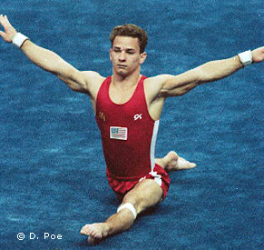

Scott Keswick (USA)
1994 Goodwill Games R Bronze Medalist

Scott was born on March 3, 1970. He graduated from UCLA with a Bachelor of Science in Math & Applied Science.
Competition Results
1985
JO Nationals (Class II): 3rd AA, 1st PB, 2nd V
1987
JO Nationals (Class I): 1st AA
1988
Jr. USA-ESP Dual Meet: 1st AA
1989
US Championships: 13th AA, 1st R
Winter Cup: 5th AA
1990
Blume Memorial: 13th AA
GER-USSR-USA: 11th AA
US Championships: 5th AA, 1st R, 2nd PB
US Olympic Festival: 5th AA
USA-USSR Dual Meet: 2nd Team, 11th AA
1991
Blume Memorial: 5th AA
Gander Memorial: 7th AA
NCAA Championships: 3rd Team, 2nd AA, 1st R, 1st V, 1st PB, 4th HB
Swiss Cup: 1st Team
US Championships: 6th AA, 1st R, 1st V, 1st PB, 4th HB
World Championships: 5th Team, 10th AA, 4th HB, 6th R
1992
American Cup: 2nd AA
Intl. Mixed Pairs: 1st Team
NCAA Championships: 2nd AA, 2nd PH, 2nd R, 2nd PB
Olympic Games: 6th Team, 19th AA
US Championships: 2nd AA, 2nd R, 2nd PB, 2nd HB
US Olympic Trials: 1st AA
1993
Chunichi Cup: 14th AA, 2nd R, 5th HB
Tokyo Cup: 4th R, 5th HB
University Games: 8th AA, 2nd R, 2nd HB
US Championships: 3rd AA, 2nd PB, 2nd HB, 3rd PH, 3rd R, 3rd V
World Championships: 9th AA, 7th R, 7th HB
1994
American Cup: 6th AA (prelims)
Goodwill Games: 7th AA, 3rd R
Intl. Mixed Pairs: 9th Team
US Championships: 1st AA, 1st R, 1st HB, 3rd PH, 5th PB, 6th FX
USA-BLR-CHN: 2nd AA
Winter Cup: 2nd AA
World Championships (Brisbane): 13th AA
1995
Reese's International: 2nd AA
1996
US Championships: 12th AA
US Olympic Trials: 11th AA
This page was created on September
17, 2005 and was last updated on November 08, 2005.
© Gymn Forum